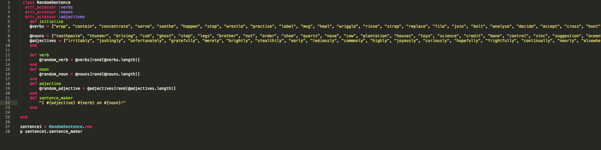

Have a look around.
Toggle MenuDeveloper in development.
Have a look at my website: http://jeromechenette.github.io
This is a collection of reflections and notes that I have been collecting as I go through DBC's Web Developer program.
Consider DBC's culture and approach to learning
Notes:
Restaurant Mindset vs. Kitchen Mindset - Product Being Served(consumer Mode) vs. We Are All In This Together(Creator Mode).
I appreciate the self motivation and collaborative effort that will be required by participants in this upcoming cohort - its inspiring. It is a fresh feel to the traditional model of passive learning that most of us have become accustomed to.
Two Fears: I am Happy that these were highlighted in the video.
Rabbit Holes: how deep you go vs. how wide you go? : This is an issue that i am happy was addressed - And its something that I hope timeboxing will assist with.
Exposing your own ignorance: This is generally a difficult thing to do in the world of professional illusion. Exposing vulnerability is a difficult thing to do in a working environment where knowing the right answer has always been the prominent and respectful goal.
Engineering principles (bricks vs. design): Nicely stated.
Pair Programing: The hardest thig to navigate - human beings (where companies fail - its where they thrive): This brings to light the imporatance of Engineering Empathy and the soft skills that I will be working tawards.
Predict how you will react to DBC's approach
I have already been exposed to so much knowledge regarding the underlying cognitive functions that can assist in my learning. One of the things that truck me about DBC is not simply the material covered but how it was going to be communicated, how it is that I will come to understand my own learning, and how this will benefit me and my professional career in the future.
Based on the video, what's your take on the DBC experience?
My take on DBC is that there will be some challenges ahead - and that these challenges present a new opportunity to refactor my wetware to be better capable and more efficient in its integration.
How do you see yourself engaging with this type of culture?
I am excited and interested in growing into this culture.
Have your expectations of DBC changed?
My expectations for myself and the DBC community grow everyday!
Are you excited to participate in this kind of learning environment?
Extremely
Does it make you nervous?
I would be nervous if I wasn't nervous. Yes. With each new environment the nerves always come out and start to dance! I suppose the key to to acknowledge that while my body may be feeling these things, breath and focus can bring me back to center. ;)
Welcome. Please relax, sit back, and enjoy participating in the process alongside me while we dive into the Dev bootcamp experience - Coding From An Empty Cup.
Version Control
Imagine for a moment that you have created the beginnings what is to be the greatest, if not most influential novel ever to be written. The only caveat is that after the initial paragraph is written you must pass it on to an open community, a community of unknown contributors that will take it, read the first paragraph and then add a second paragraph, a third, a fourth, and so on. This process can revisited by anyone, at anytime. The greatest, if not most influential story ever written begins to branch; the story forks, a branch ends, another starts, and the story returns to the trunk, some branches are abandoned while others proved fruitful until it too is abandoned. In time, however, what might emerge from a combination of contributors is the revered and prophetic greatest, if not most influential novel ever to be written.
Now. If you squint your eyes, smirk, and imagine this choatic semblence of a 'create your own adventure' model you may see how version control could aid in assembly.
Version control allows a group of contributors to all work on a project simultaneously with the safeguards of not overwriting each others work. With each addition to the project (commit) the change is recorded and marked - branches are formed and noted - a project can revert back to before the change, or before a particular change occurred, once a change is fully tested, it can be merged back into the master branch. This proves extraordinarily useful with debugging, when working with large teams, when you desire to see when a particular feature was added to a bit a code.
Git & GitHub
Git is a distributed version control system. Git lives locally on your computer while GitHub lives remotely on the internet/cloud/internet. GitHub is an online ‘hub’ - GitHub is a remote entity to which you’re ‘pushing’ (i.e uploading) stuff that would otherwise only exist locally AKA Git - through a workspace, a stage, and finally a central respository. Git allows you to work on your own copy until you are ready to pull in changes from contributors, and push back your own changes. Git has a third identical copy (A three tree architecture structure) you could both push and pull from to track changes and work from while tracking changes and pulling changes down from/to/receive/add the staging area and then making final commits to the repository/master branch.
Margin is the space outside the border whereas padding surround each and every piece of content.
Classes can not only be useled multiple times on multiple emlements / you can use multiple classes on the same elemnet.
Each element can only have one ID / On a page only one elemexnt will have a given ID.
Still figuring it out in practice:
For review from http://css-tricks.com/absolute-relative-fixed-positioining-how-do-they-differ/:
Static. This is the default for every single page element. Different elements don't have different default values for positioning, they all start out as static. Static doesn't mean much, it just means that the element will flow into the page as it normally would. The only reason you would ever set an element to position: static is to forcefully-remove some positioning that got applied to an element outside of your control. This is fairly rare, as positioning doesn't cascade.
Relative. This type of positioning is probably the most confusing and misused. What it really means is "relative to itself". If you set position: relative; on an element but no other positioning attributes (top, left, bottom or right), it will no effect on it's positioning at all, it will be exactly as it would be if you left it as position: static; But if you DO give it some other positioning attribute, say, top: 10px;, it will shift it's position 10 pixels DOWN from where it would NORMALLY be. I'm sure you can imagine, the ability to shift an element around based on it's regular position is pretty useful. I find myself using this to line up form elements many times that have a tendency to not want to line up how I want them to.
There are two other things that happen when you set position: relative; on an element that you should be aware of. One is that it introduces the ability to use z-index on that element, which doesn't really work with statically positioned elements. Even if you don't set a z-index value, this element will now appear on top of any other statically positioned element. You can't fight it by setting a higher z-index value on a statically positioned element. The other thing that happens is it limits the scope of absolutely positioned child elements. Any element that is a child of the relatively positioned element can be absolutely positioned within that block. This brings up some powerful opportunities which I talk about here.
Absolute. This is a very powerful type of positioning that allows you to literally place any page element exactly where you want it. You use the positioning attributes top, left bottom and right to set the location. Remember that these values will be relative to the next parent element with relative (or absolute) positioning. If there is no such parent, it will default all the way back up to the element itself meaning it will be placed relatively to the page itself.
The trade-off, and most important thing to remember, about absolute positioning is that these elements are removed from the flow of elements on the page. An element with this type of positioning is not affected by other elements and it doesn't affect other elements. This is a serious thing to consider every time you use absolute positioning. It's overuse or improper use can limit the flexibility of your site.
Fixed. This type of positioning is fairly rare but certainly has its uses. A fixed position element is positioned relative to the viewport, or the browser window itself. The viewport doesn't change when the window is scrolled, so a fixed positioned element will stay right where it is when the page is scrolled, creating an effect a bit like the old school "frames" days. Take a look at this site (update: dead link, sorry), where the left sidebar is fixed. This site is a perfect example for since it exhibits both good and bad traits of fixed positioning. The good is that it keeps the navigation present at all times on the page and it creates and interested effect on the page. The bad is that there are some usability concerns. On my smallish laptop, the content in the sidebar is cut off and there is no way from me to scroll down to see the rest of that content. Also if I scroll all the way down to the footer, it overlaps the footer content not allowing me to see all of that. Cool effect, can be useful, but needs to be thoroughly tested.
Still figuring it out in practice:
For review from StackOverFlow:
Inline elements:
1.respect left & right margins and padding, but not top & bottom
2.cannot have a width and height set
3.allow other elements to sit to their left and right.
Block elements:
1.respect all of those
2.force a line break after the block element
Inline-block elements:
4.allow other elements to sit to their left and right
5.respect top & bottom margins and padding
6.respect height and width
Arrays and Hashes are both a collection of information. The difference is in how the information is referenced( a collections of key-value pairs). In an array the information is stored and then refrenced by its index. The key is an integer that defines its index of the array. For example array_example = [index0, index1, index3, index4]. In hashes any object can be utilized as a key. Both arrays and hashes can store strings, integers, floats,
For example:
array_example = ["farley", "Ashley", "Killer"]
This is an array of the names of my favorite pets
If i wished to call the first object in the array I would do so by: array_example[0]
This is, essentially, asking for the object that is in the first index of that array. This is efficient but it is a vulnerable method of refernceing objects in because the sorting of the objects in an array may change, be deleted, be added, etc.
To take the above example:array_example = ["farley", "Ashley", "Killer"] and make it into a hash.
hash_example = {'cat'=> 'Farley', 'Dog'=>"Ashley", "Reptile"=>'Killer'}
In this example we are assigning the key (cat) to the value (Farley).
If I wished to see the names of my favorite cat I would call on: hash_example['cat']
my_hash = {
key1: "value1",
key2: "value2"
}
Inversly, if I were to question the category that I had placed our dear, and beloved 'Farley' into I could call:hash_example['farley'] and see that she has been assigned the key of 'cat'.
There are still many, many, many, many, many, (yes....), many more things that could be stated regarding hashes, arrays, and the way in which to sort data. I will update and return to this posting as my learning continues.
Research your thinking style
Notes from: http://web.cortland.edu/andersmd/learning/Gregorc.htm
Abstract Random Thinkers organize information through reflection, and thrive in unstructured, people-oriented environments.
Abstract: This quality allows you to visualize, to conceive ideas, to understand or believe that which you cannot actually see. When you are using your abstract quality, you are using your intuition, your imagination, and you are looking beyond “what is” to the more subtle implications. "It is not always what it seems."
Random: Lets your mind organize information by chunks, and in no particular order. When you are using your random ability, you may often be able to skip steps in a procedure and still produce the desired result. You may even start in the middle, or at the end, and work backwards. You may also prefer your life to be more impulsive, or spur of the moment, than planned.
ABSTRACT RANDOM
This learner likes:
They learn best when:
What's hard for them?
Multimodal Learner:
Notes from:http://www.davidlazeargroup.com/free_articles/multi-modal.html
"In a nutshell it means that the more different ways you learn something the more you will really learn it!"
Abstract Random (AR) Thinker && Multimodal Learner
What to say?
While I have known this about myself for quite some time I have never solidified it with a formal evaluation. This is amusing seeing as it plays a role in much of how I go about interpreting and interacting with the world.
I have always had my learning setting suited to my needs. A comfortable environment where I can control particular elements and monitor the level of ditracting information
I have always learned best when I can engage with the material on a mutitude of levels while at the same time entertaining the subject matter in conversation with others
I have always sought to be more co-operative rather than competative. While I see value in both I tend towards the former while attempting to engage with the latter
Consider strategies for adapting your learning to your thinking style
I have sought avenues of learning that expose me to video, audio books, written word, and discourse in order to survey the information landscape thoroughly.
Formulate ways to expand the ways you learn and think
I plan on continuing to expand the ways that I learn. I am eager to engage in person with the cohort now that I am back in San Francisco.
Reflect on your experience in Phase 0 to this point. What has been the biggest struggle for you?
The pairing sessions have been a solidifying experience. It allowed me to take the information that I had garnered, the problem solving techniques that I had developed and put them to use in conversational form
The biggest struggle has been when I have been confronted with a problem to which I could not forsee the solution while lacking to utilize the community as a resource.
At times I admit that I have neglected the mathmatical methodologies from my area of expertise. With that admittance I have stayed grounded on the belief that my brain can develop its understanding
END
Enumerable Method
In this blog entry we will be looking at the way an enumerable method. How it works and how to use it.
We will be looking at:
Enumerable#partition
Here it is:
(1..6).partition { |v| v.even? } #=> [[2, 4, 6], [1, 3, 5]]
I was able to use this in practice when wishing to create a my_hash_splitting_method that will separate the hash into two arrays based on the value. It will return two arrays, the first which includes all pets who are five years of age or younger and the second that includes all other pets.
def my_hash_splitting_method(source, age)
source.partition { |k,v| v<=age }
end
p my_hash_splitting_method(my_family_pets_ages, 5)
#Output: [[["Hoobie", 3], ["Bogart", 4], ["Poly", 4], ["Annabelle", 0], ["Ditto", 3]] are in their own array while [["Evi", 6], ["George", 12]]] are in a separate.
I imagine that this will prove useful when working with a hash and wanting to sperate it into an array based of a key or value.
Issues in Tech
Security
It is difficult to describe "our modern world" without resorting to blanketed descriptive declarations - like "our modern world"- but I continue regardless...
There is a balance that has yet to be reached between the business needs of timely and cost effective software development and sound testing of security vulnerabilities.
While privacy issues are being brought to public discourse, government and private collection of data and metadata being reviewed by the court of social media buzz, and cyber-security language assimilated into the popular vernacular, where does the responsibility of security breaches lay? Many corporations feel their consumer base retreat after a publicize cyber attack but the attention span of the general public is forgiving, and the cultural psychosis denies any problem. Large businesses still are able to ignore discovered and disclosed security exploits. While bug bounty programs have created the environment for safe and confidential environments where hackers are properly financially compensated for divulging their findings often times companies will ignore or simply fail to act on these disclosures.
Currently the Cyber Intelligence Sharing and Protection Act may allow for the sharing of Internet traffic information between the U.S. government and technology and manufacturing companies; new insights from Edward Snowden has revealed a torrent of injustices against the American Public via privacy breaches from the NSA. While lawful guidelines are being created, and cultural values questioned how are companies reasonably expected to comply, act, and react to a consumer base that wants privacy, a business model that is build on targeted ad revenue, and a government that wants to encrypt data so long as they can read it.
With this in mind – I believe that a problem in the tech industry is one of illiteracy. Similarly to an uneducated voting citizen how are software developers expected to responsibly build software without knowing the techniques that are used to break software.
I am excited to see programming being exposed to children – I feel that a greater literacy will grow a better informed public in regards to what software they choose to engage with and why.
Pairing:
Pairing has proved to be an opportunity to visited challenges and work them out with both a backboard for exploration. I look forward to pairing. It brings an opportunity to utilize newly learned material, expose me to information I have yet to discover and explore new models of execution. At times I have been at a loss and this has helped me when the roles have been reversed.
When an opportunity arises that I have a good idea concerning the challenge I feel that it helps me to review the material that I have learned and solidify it by articulating it verbally and by example.
When the opportunity arises that I am at a loss as to the next step I am presented with the opportunity to be guided in a direction and learn from others experience.
Feedback:
Feedback has been a challenge. There was one feedback submission that I received that stated "I was rarely comfortable expressing themselves clearly and concisely" & "The Pair felt rarely inspired and motivated by me." This, of course made me feel concerned by the manner in which I communicated with my pair. While this was only one of the 11 Feedbacks that I have yet to receive (all the remainder had positive things to say) it struck me. It motivated me to think about how to better express myself, my knowledge, and my enthusiasm.
This is an example of how feedback, even negative, has been helpful
The "Ask": Actionable, Specific, Kind.
This sets up a nice model for me to structure my feedback and evaluate how things went, and how they could be improved upon.
The most difficult aspect of writing feedback is in concerns to the bubble checkmarks. They leave little room for explanation in regards to the rating. I plan on address this in my next feedback assignment
Have a look around.
Toggle MenuClasses in Ruby:
This weeks technical blog topic is on Runy Classes.
What is a ruby class?
Classes allow you to group methods and then initialize new instances of that class to create invidual objects that operate similarly.
Class Methods: Methods within classes can utilize variables accross methods by utilizing the instance variable - assigning that veriable: @variables = variables.
Let us look at the abive example
Each of these methods exist within one class with the sole purpose of making funny sentences. The intance variable is defined in the "def initialize" - in this case @verbs, @nouns, and @adjectives. This allows the viables scope to transcend and be interpolated into each of the follwoing methods. After each of the selected arrays are randomized one word is assigne to a vraible. With string interpolation placed into a sentence.
Here we have:
Instance method verb in the class RandomSentence.
The class method sentence_maker in the class RandomSentence.
This class is initialized by creating and new instance of the class RandomSentence: sentence1 = RandomSentence.new
The class method Sentence_maker is called in the class Random Sentnece: p sentence1.sentence_maker
"I lightly accept on wall!"
"I unfortunately prick on zinc!"
"I brightly wrestle on north!"
"I righteously rinse on pies!"
Real World?
Chris Pine: "Do you perceive it as peopled with things, each of which has tasks to do and waits for someone to request the task? If so, you may conclude that object-oriented languages model the world best."
Does this type of programming mirror the real world? Depends on your perspective.
I want to briefly look at some of the Object-Oriented Programming Concepts that DBC has suggested as review and then look at one of these concepts more in depth.
OO vs. Functional Programming
Notes:
Variable Scope
Notes: "Scope defines where in a program a variable is accessible. Ruby has four types of variable scope, local, global, instance and class. In addition, Ruby has one constant type. Each variable type is declared by using a special character at the start of the variable name as outlined in the following table."
| Name Begins With | Variable Scope | Details |
|---|---|---|
| $ | A global variable | Notes: "Global variables are valid everywhere in the script. They start with a $ sigil in Ruby. The use of global variables is discouraged. Global variables easily lead to many programming errors. Global variables should be used only when there is a reason to do so. Instead of global variables, programmers are advised to use local variables whenever possible." |
| @ | An instance variable | Notes: "Instance variables are variables that belong to a particular object instance. Each object has its own object variables. Instance variables start with a @ sigil. Class variables belong to a specific class. All objects created from a particular class share class variables. Class variables start with @@ characters." |
| [a-z] or _ | A local variable | Notes: "Local variables are variables that are valid within a local area of a Ruby source code. This area is also referred to as local scope. Local variables exist within the definition of a Ruby module, method, class." |
| [A-Z] | A constant | Notes: "Constants begin with an uppercase letter. Constants defined within a class or module can be accessed from within that class or module, and those defined outside a class or module can be accessed globally. Constants may not be defined within methods. Referencing an uninitialized constant produces an error. Making an assignment to a constant that is already initialized produces a warning." |
| @@ | A class variable | Notes: "A class variable is a variable that is shared amongst all instances of a class. This means that only one variable value exists for all objects instantiated from this class. This means that if one object instance changes the value of the variable, that new value will essentially change for all other object instances. Another way of thinking of thinking of class variables is as global variables within the context of a single class." |
Blocs, Procs, and Lambdas
Notes:"Blocs: code blocks passed into methods are anonymous objects, created on the spot."
Notes:"Procs: Procs are objects; block created with Proc.new behaves like it’s a part of the calling method when return is used within it, and returns from both the block itself as well as the calling method."
Notes:"Lambdas: A block created with lambda behaves like a method when you use return and simply exits the block, handing control back to the calling method."
Class Methods
Notes: "Class method: An object made up of behavior and data."
Classes vs Modules
Notes: "Classes are about objects; modules are about functions."
Inheritance vs Composition
Notes:"Inheritance is used to indicate that one class will get most or all of its features from a parent class."
Notes:"Composition - calling functions in a module.
In Depth: Inheritance vs Composition
Inheritance
"Inheritance is used to indicate that one class will get most or all of its features from a parent class". What this is saying is that when you create a class and make another class its parent then the child class will inherit all of the behaviors of the parent class. In my reading on the subject it appears that this can be a relationship that has great rewards, but one that comes with great risk. The complications that arise when calling on additional behaviors from parent classes can become complicated and create unforeseen outcomes.
Notes: From http://learnrubythehardway.org/
This inheritance of behavior from the parent class takes place even if the child class does not have that behavior explicitly stated; this behavior can be overridden if the method -- with the same method name -- is repeated and either given a different behavior or no behavior at all.
The Inherited behavior can be altered by calling on Ruby's built-in function named super()) to alter the expression of the parent class behavior and stating when you want that behavior altered. The use of Ruby's built-in function named super() is commonly used in the initialized method which acts similarly to simply placing it within a corresponding method: "setting some variables in the initialize before having the Parent initialize with its Parent.initialize."
Composition
Rather than rely on implicit inheritance utilizing the full inheritance from a parent class and formulating a child <==> Parent relationship you can utilize Composition; calling functions in a module.
Essentially you are calling out which methods you want to take on from another class explicitly rather than in bulk. (You pick what to use rather than what not to use).
FUN FUN FUN
Stereotype Threat
"Stereotype threat refers to being at risk of confirming, as self-characteristic, a negative stereotype about one's group"
This is a sensitive look at the underlying currents that govern how many of us perform when events come into conflict that may threaten a perceived sense of identity that we may have developed in our lives. This "social identity" that comes from our group memberships and social categories that we belong - race, gender, age, profession, ethnicity, sexual orientation, mental health status. The importance of this identity in its role as it effects our performance depends on the occurrence of conflict or confrontation that that identity - contingencies - who is "we".
- Explain the symptoms and consequences of stereotype threat
When this identity is ties to a sense of lack of ability, an inherit sense of expectations, or a negative stereotype about one of your identities is relevant for which you may be reduced to that identity alone - that prospect is distressing and may affect your actions in the world.
Consequences:
Create strategies for combating stereotype threat
Below is listed a short list of strategies that have been suggested for combatting stereotype threat listed on http://www.reducingstereotypethreat.org/reduce.
My Personal Strategy
Of the listed strategies, I wish discuss how I would like to implement one:
"Emphasizing high standards with assurances about capability for meeting them"
This challenge has brought awareness of the issue to the forefront of my mind. I hope that it will guide me to better understand the undercurrents that may dictate my own inner workings as well as the inner workings of my fellow cohorts, co-workers, family and friends. This strategy will be something that I incorporate when I give feedback to those that may be struggling as well as myself in times of struggle. I found that the examples by Claude M. Steele to be moving: The feedback you give can have a tremendous on its recipient. He sited two cases of discouraged students in which a narrative was formulated that validated the discouragement and then led the story to a place of success. This would be akin to communicating how I once had trouble iterating through sub-arrays and understanding classes which then led me to study more, engage in more conversation of the subject matter and, ultimately, creating my first application. {aired with this success story, I can imagine, communicating your honest understanding to the participants capabilities to be crucial in assisting them from dismissing any stereotype threats that may be causing inner turmoil; "I know you are having a ghard time with this, but I have 100% confidence that you are capable of figuring out."
Impostor Syndrome
I would like to shift focus here to briefly discuss 'Impostor Syndrome'. Impostor Syndrome, while occurrence is discussed mostly amongst high achieving women, effects us all. "Impostor Syndrome is a psychological phenomenon in which people are unable to internalize their accomplishments. Despite external evidence of their competence, those with the syndrome remain convinced that they are frauds and do not deserve the success they have achieved."
Strategies that are suggested for this are: To change how you talk to yourself about your skills and successes, reflection, writing down your accomplishments, and confirming your skills from others
I feel that I have, from time to time, experienced - Impostor Syndrome. At times I wondered if anyone placed in roles of responsibilities are there simply as a result of happenstance or are they competent in their role? I have a difficult time, even with hard work, believing that I deserve to be in the position that I am in.
I will utilize the above strategies and attempt to overcome this condition.
Affirmation and Stereotype Threat
Identify values that are important to you
| Exploring | Your | Values |
|---|---|---|
| Accomplishment | Accountability | Achievement |
| Activism | Adventure | Affection |
| Ambition | Autonomy | Challenge |
| Close relationships | Commitment | Community |
| Compassion | Competence | Competition |
| Confidence | Conformity | Control |
| Coolness under fire | Cooperation | Courage |
| Creativity | Credibility | Decisiveness |
| Economic security | Effectiveness | Efficiency |
| Enthusiasm | Environmentalism | Excellence |
| Excitement | Fairness | Faith |
| Fame | Free time | Freedom |
| Friendships | Growth | Having a family |
| Health | Helping others | Helping society |
| Honesty | Hospitality | Independence |
| Influence | Inner harmony | Insight |
| Inspiration | Integrity | Intellectual status |
| Introspection | Justice | Knowledge |
| Leadership | Location | Loyalty |
| Meaningful work | Mentorship | Merit |
| Money | Movement | Music |
| Nature | Openness | Order |
| Patriotism | Peace | Persistence |
| Personal development | Physical challenge | Pleasure |
| Power and authority | Privacy | Public service |
| Purity | Quality | Recognition |
| Reputation | Responsibility | Romance |
| Security | Self-knowledge | Self-reliance |
| Self-respect | Serenity | Sophistication |
| Spirituality | Stability | Kittens |
| Tranquility | Truth | Vibrancy |
| Volunteering | Wisdom | Will-power |
Growth
Write a couple of sentences about why the value you chose is important to you:
The above values are all great things to add into our daily affirmations when thinking about ourselves and how we wish to be in the world. Some have to do with the intangible yet material aspirations, others are more visceral and sensitive to our deeper nature. I chose the value of Growth - it encompasses many values beneath it including will-power, self-reliance, physical challenges, personal development, introspection, knowledge, creativity, and adventure!
To challenge ourselves to continue to grow. Simple. Yet...sometimes illusive.
While this is the value that I hold to myself I can only hope that it extends to the manner in with I approach my relationships with others. Seeking avenues of connection and support, cooperative, creative, and insightful growth.
Explain how to use affirmation to help you succeed
"A general means for protecting the self from perceived threats and the consequences of failure is to allow people to affirm their self-worth. This can be done by encouraging people to think about their characteristics, skills, values, or roles that they value or view as important (Schimel, Arndt, Banko, & Cook, 2004). Frantz, Cuddy, Burnett, Ray, and Hart (2004), for example, showed that Whites who were given the opportunity to affirm their commitment to being nonracist were less likely to respond in a stereotypic fashion to an implicit measure of racial associations that had been described as indicative of racial bias...For students who self-affirmed, they were asked to indicate values that were important to them and to write a brief essay indicating why those values were important. For students who did not self-affirm, they indicated their least important values and wrote an essay why those values might be important to others."
Me?
I feel that self-affirming my own self worth and the values I wish to share with others can be strengthened when I integrate a self-reflective time to each and every day.
What was the last topic that someone asked for your advice on?
The last opportunity I had to examine a topic that someone came to me with, seeking advice, dealt with "Their next bold move". This was a question that revolved around the changing circumstances of a friend of mine - their dissatisfaction yet continued apathy in regards to all things "life".
Did it relate to any of the values you found important?
Yes. I suppose. Exploring topics of depression, life circumstance, self-empowerment, explorations, enthusiasm, change...GROWTH!
How do you feel when you think about your values?
I feel strong. Adaptable. Agile. Open to experience.
Do you think it can help you mediate stereotype threat if you recognize you feel it?
I think that emotional growth and stability can be managed in balance with honest and sincere exposure in regards to our knowledge insufficiencies.
Can you think of any other exercises you can use to help you when you are feeling down (for whatever reason) at DBC?
Absolutely. Strong mind, strong body.
JavaScript Vs. Ruby
Ruby Hashes vs. JavaScript Objects:
Javascript objects look a whole like like ruby hashes - syntactically similar they operate slightly different.
"JavaScript has no built in data type to parallel Ruby's Hash, although we can use object literals in JavaScript to achieve a similar functionality."
Ruby: animal= { cat: "woof woof" } #ruby hash puts animal[:cat] #prints "Woof Woof"
Javascript: var animal = { cat: "woof woof" } // js object console.log(obj["cat"]) //prints "Woof Woof"
Ruby classes vs. JavaScript constructor functions:
In ruby we initialize a new class with 'Class.New'. In javascript we initialize the object similarly with the 'new' operator. With this operator we creat new objects, set the propertys to the constructor function, and returns a new object.
Ruby documentation vs. JavaScript documentation:
http://ruby-doc.org/ vs. https://developer.mozilla.org/en-US/docs/Web/JavaScript/Reference
Notes:
Similarities
Differences
Discuss a time you had a conflict. What was it about? What happened?
Perhaps this is an example of selective memory. Perhaps an example of the peace keeper within that downloads Fifty-Sades of Gray audio recording in the event that I start to receive an unrelenting torrent of unsolicited phone calls. This is a solution that I deemed both warranted and compassionate. I am fully aware that the human being on the other end of the line is not acting on their own motivation; I know that they are simply the extension of a faceless beast of an organization that we will call Comcast.
What was the source of the conflict?
While the specifics of the case will remain private I will simply say that the source of the conflict was both feeling violated in terms of what agreement I had entered into as well as powerless in the face of a giant organization.
What basic emotions did you feel upon analyzing the conflict?
Frustration, anger...then humor in the absurdity of it all.
What actions did you take to resolve your conflict?
At this point I wish I could say that I changed my phone number to a pay per call - thereby charging Comcast each and every time they called me. But alas - no. While discussions remained polite - the logic that drove them did not. I resolved my emotions of anger and frustration by formulating a better understanding and redefining the terms of our relationship.
If you could go back, what would you do differently, if anything?
"Peace is not absence of conflict, it is the ability to handle conflict by peaceful means."
What did you learn from this experience?
"If you want to bring an end to long-standing conflict, you have to be prepared to compromise."
Web Security: SQL injection
Code injection is when a invalid data via a statement or command is passed and executed. This results in unforeseen consequences not intended by the original author / owner of the database.
SQL injection are the most popular form of code injection: "SQL injection is a code injection technique, used to attack data-driven applications, in which malicious SQL statements are inserted into an entry field for execution1".This type of security vulnerability exists when the argument passed to a function is weakly typed. A weakly typed argument is when the argument while not closely matching the expected value is still accepted. SQL is written in C++ which is considered a weakly typed language.
One example of this is Incorrectly filtered escape characters; when querying a database with SQL statements and the inputs are not filtered for escape characters. String literal escape characters are characters that initiate different controls in a program. "If a program is incorrectly filtered it will not reject other characters such as (#, <, >, =, *, etc.)."
The output may return more than the author of the code intended. Most SQL server implementations allow multiple statements to be executed with one call, some SQL APIs such as PHP's do not allow for this specifically for security reasons.
SELECT * FROM users WHERE name = '' OR '1'='1';
If the above statement were to be used in the authentication of a user-name the additional statement "1=1" would return true and grant access.
Other statements can be utilized to delete, augment, and/or expose information that was not intended to be made accessible.
Experiment!
Search for: "SQL Injection Codes"
Find a URL that looks like: http://www.awebsite.com/items.php?id=5
Look for the “php?id=5” - or any number
Type an invalid string literal escape character after the last character in the URL (#, <, >, =, *, etc.)
If the site produces a syntax error message it may be vulnerable to a SQL injection.
From this point on you can begin to utilize what is known as SQL Tag Injection - by placing a # after the number and passing in additional arguments you can query the database, delete content, or inject viruses.
See:Hack Attack Series: SQL Injection By Collin Donaldson
See:"https://www.owasp.org/index.php/Top_10_2013-A1-Injection"